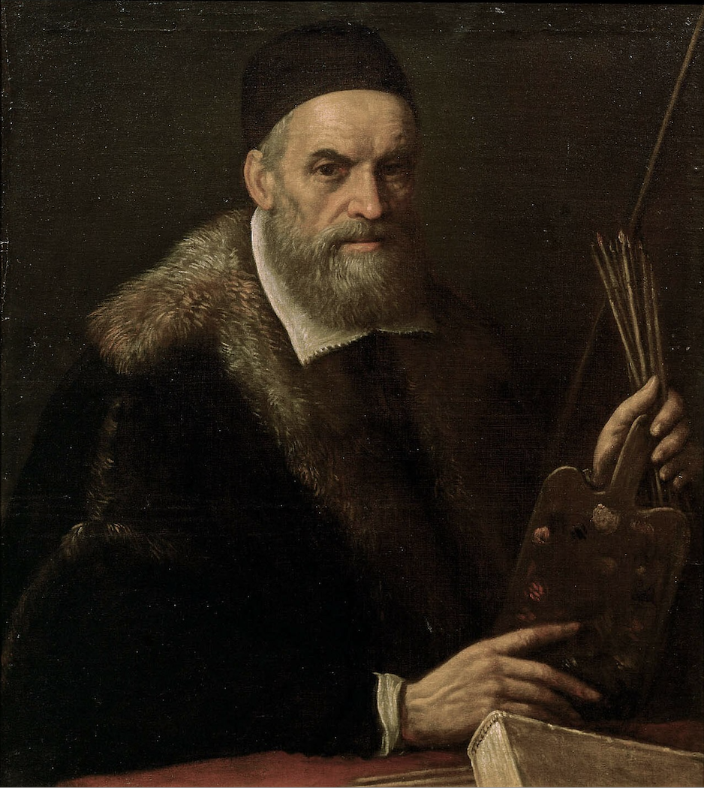
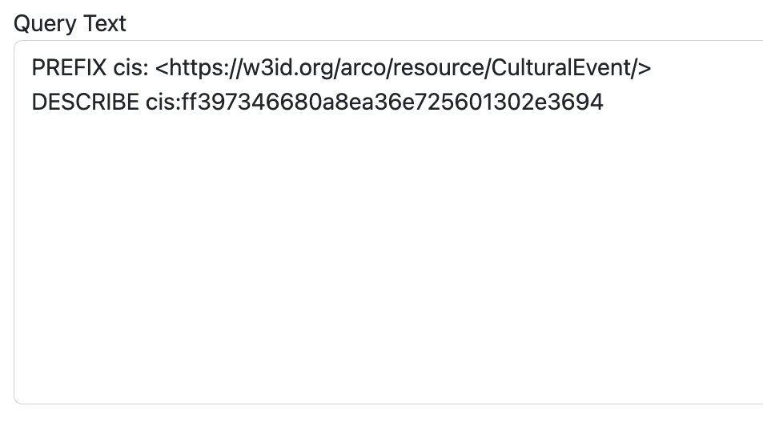
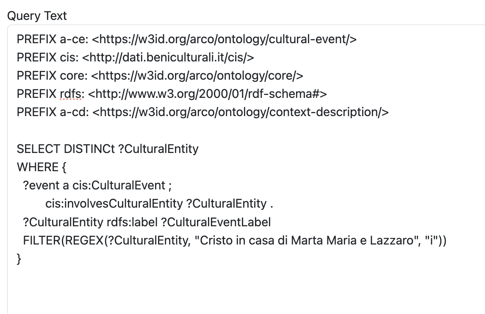
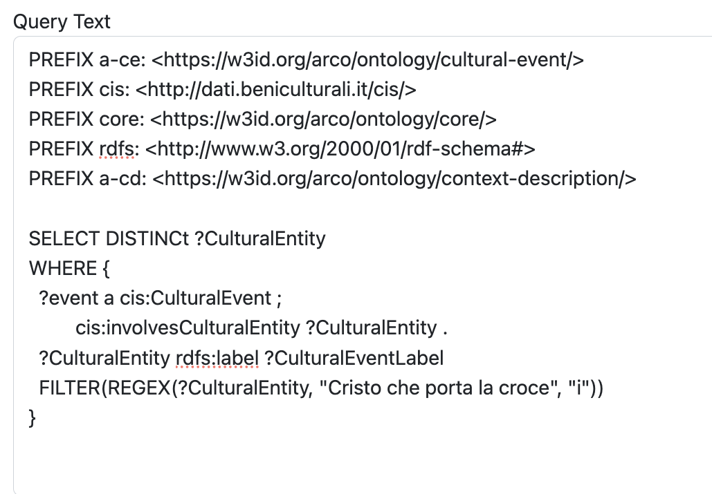
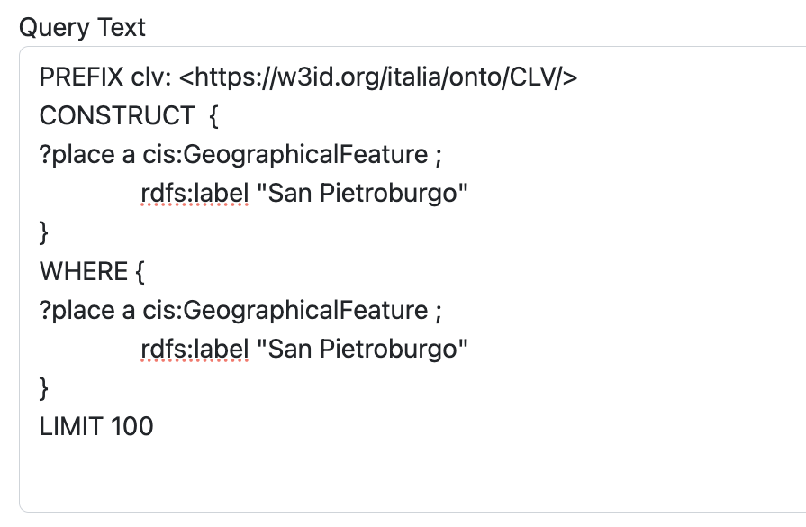
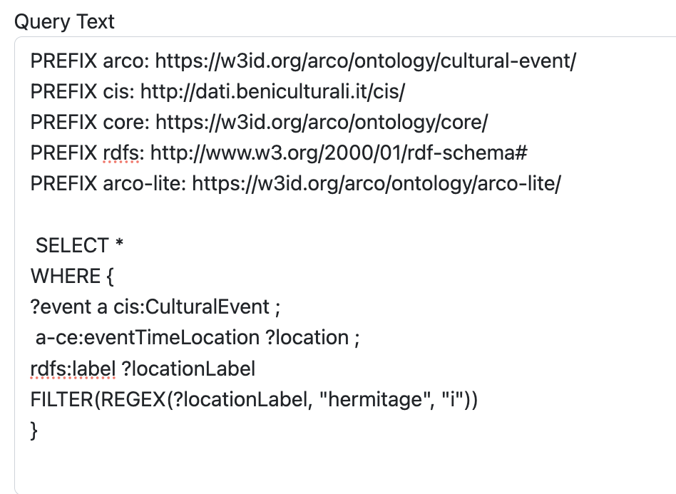

KRISTINA
About the cultural event
Jacopo Bassano
|  |
Jacopo Bassano, whose real name was Jacopo dal Ponte, was an Italian Renaissance painter born around 1510 in the town of Bassano del Grappa, in the Venetian Republic. He was renowned for his distinct style and significant contributions to the Venetian school of painting. Bassano's artistic career flourished during the 16th century, a period marked by the Renaissance's peak in Italy. He was known for his religious paintings, portraits, and genre scenes, often depicting biblical narratives and pastoral settings with remarkable naturalism and detail. His workshop in Bassano became a significant artistic center, where his sons and pupils, including Francesco Bassano the Younger, continued his artistic legacy. Jacopo Bassano's contributions to Renaissance art continue to be celebrated for their technical prowess, emotional resonance, and innovative approach to composition and storytelling. |
STEPS
First Step
I wanted to begin with retrieving new information about my event and decided to use the following SPARQL query:
|  |
Purpose of the Query
What the Query Seeks to Discover
rdf:type: Indicates that the resource is of type "CulturalEvent" (cis:CulturalEvent). |
Second Step - Enrichment and Comparison Using LLM Models
After gathering all the information, the next steps involve enriching the data and utilizing Large Language Models (LLMs) for further analysis. For this comparison, I will employ two models: ChatGPT and Mixtral.
I decided to verify and enhance the extracted information for the "cis:involvesCulturalEntity" relationship.
The first request was the followong:
Cultural Event: Jacopo Bassano
Place: Russia
Q: Which notable pieces by Italian painter Jacopo Bassano reside within cultural institutions based in Russia?
| ChatGPT | Mixtral |
|
Jacopo Bassano, an Italian painter from the Renaissance era, has left a mark on art history with his richly detailed and emotionally resonant works. While Bassano's pieces are primarily associated with Italian collections, some notable works have found their way into cultural institutions based in Russia. One of the notable pieces by Jacopo Bassano housed in Russia is "The Adoration of the Shepherds," which is part of the collection at the State Hermitage Museum in Saint Petersburg. This painting showcases Bassano's mastery of light and composition, depicting a tender moment of adoration by shepherds towards the newborn Christ. Another significant work is "Christ in the House of Mary and Martha," which can also be found in the State Hermitage Museum. This painting illustrates a biblical scene with intricate details and expressive characters, reflecting Bassano's skill in capturing human emotions and storytelling. While these are just a couple of examples, they highlight the presence of Jacopo Bassano's art within Russian cultural institutions, enriching the country's artistic heritage with Renaissance masterpieces. (During this search we didn’t have an opportunity to apply different setting for temperature or tokens. As a result the answer is rather ‘’creative’’ and large) |
I don't have real-time access to databases or art collections, but according to various sources, some of the works attributed to Jacopo Bassano (also known as Jacobello da Ponte) can be found in Russian museums. Here are a few examples: The State Hermitage Museum in Saint Petersburg has several paintings that might be from his workshop, including "The Adoration of Shepherds" and "Christ Carrying the Cross." It is important to note that attribution may vary among different scholars over time due to evolving understandings about artists and their techniques during specific periods. Therefore, it would be best for you to check with these institutions directly regarding any updates on this information. (During this search we had an opportunity to apply different setting for temperature or tokens. As a result the answer shorter and without any additional information that we dint need) |
| Second question: Can you extract exact cultural entities from this description? | |
| ChatGPT | Mixtral |
|
Certainly! From the description provided, the exact cultural entities are:
|
Answer:
(Gave him a prompt - Give me as a result just a list and nothing more.
|
| Third question: Could you transform this description into RDF format and use Arco ontology? | |
| ChatGPT | Mixtral |
@prefix arco:http://www.semanticweb.org/ontologies/2020/2/ArCo# @prefix rdf:http://www.w3.org/1999/02/22-rdf-syntax-ns# @prefix rdfs:http://www.w3.org/2000/01/rdf-schema#>/p> @prefix ex: ex:TheAdorationOfTheShepherds a arco:Painting ; rdfs:label "The Adoration of the Shepherds" ; arco:depicts ex:Christ ; arco:createdBy ex:JacopoBassano (After this result I decided to give it a couple of examples of working queries)
PREFIX arco:https://w3id.org/arco/ontology/cultural-event/ PREFIX rdfs:http://www.w3.org/2000/01/rdf-schema# SELECT ?painting ?label WHERE { ?painting a arco:Painting ;rdfs:label "The Adoration of the Shepherds" }
PREFIX arco:https://w3id.org/arco/ontology/cultural-event/ PREFIX rdfs:http://www.w3.org/2000/01/rdf-schema# SELECT ?painting ?label WHERE { ?painting a arco:Painting ;rdfs:label "Christ in the House of Mary and Martha" } |
PREFIX xsd: http://www.w3.org/2001/XMLSchema# PREFIX anno: http://www.w3.org/2008/annotate# PREFIX reco: http://data.recotools.net/ontology# PREFIX prop: http://digital.csic.es/aaa/resource/ PREFIX nt: http://digital.csic.es/tripleStore/namespaces/AAA_ARCO/current/ PREFIX obo: http://purl.obolibrary.org/obo/ PREFIX prov: http://www.w3.org/ns/prov# PREFIX skos: http://www.w3.org/2004/02/skos/core# PREFIX cc: http://creativecommons.org/ns# PREFIX wasabi: http://linked.art/datasets/wasabiwiki/namespace/ PREFIX salsah: http://www.salsah.net/salsah-onto# PREFIX crm: http://erlangen-crm.org/current/ PREFIX edm: http://www.europeana.eu/schemas/edm/ PREFIX dcterms: http://purl.org/dc/terms/ PREFIX dctype: http://purl.org/dc/dcmitype/ PREFIX viaf: http://viaf.org/ PREFIX geonames: http://sws.geonames.org/ PREFIX fabio: http://purl.org/spar/fabio/ PREFIX foaf: http://xmlns.com/foaf/0.1/ PREFIX bibo: http://purl.org/ontology/bibo/ PREFIX owl: http://www.w3.org/2002/07/owl# PREFIX act: http://activitystrea (While the response contained extensive information about prefixes, it didn't yield much relevant content regarding the prompt. Despite adjusting the temperature and tokens settings, the model focused heavily on discussing prefixes. Additionally, even with the prompt guiding it to utilize the 'arco anthology' for the task, the response didn't align with this instruction.) |
Let's analyze and compare the responses from both models regarding the description of the cultural event "Jacopo Bassano" based on the abilities of both models in generating SPARQL queries based on the provided task of retrieving information about the cultural events.
Model 1 (ChatGPT)
Completeness:Model 1 generates SPARQL queries with additional promps more effectively.
Accuracy:After additional prompting Model 1 demonstrates a good understanding of SPARQL syntax and constructs queries that adhere to semantic web standards
Clarity:The generated queries are clear and well-structured, making them easy to understand and modify if needed.
Model 2 (Mixtral)
Completeness:Model 1 misses crucial properties and provides incomplete queries, even after using additional prompt to receive the information
Accuracy:No accuracy
Clarity:The queries generated by Model 2 lack clarity and proper structure. They might be difficult to understand or modify due to issues with formatting or syntax
Final Recommendation:Based on the comparison, Model 1 outperforms Model 2 in terms of generating accurate, comprehensive, and clear SPARQL queries. Model 2's performance in query generation was poor, showing limitations in completeness, accuracy, and clarity. Therefore, for tasks requiring reliable SPARQL queries, Model 1 would be the preferred choice.
Third Step - To check if the entities already exist in the knowledge graph
The LLM created new entities, but what if the these entities already exist in the knowledge graph? In such case we want to reuse it.
|  |
Question:
Purpose: |
|  |
Question:
Purpose: |
Third step conclusion and new Triples
Considering the absence of data on these paintings in the ArCo database system, we can enrich the ontology with the additional information and make new triples:
- 1) https://w3id.org/arco/resource/CulturalEvent/ff397346680a8ea36e725601302e3694 cis:involvesCulturalEntity https://w3id.org/arco/resource/HistoricOrArtisticProperty/Cristo in casa di Marta Maria e Lazzaro
- 2) https://w3id.org/arco/resource/CulturalEvent/ff397346680a8ea36e725601302e3694 cis:involvesCulturalEntity https://w3id.org/arco/resource/HistoricOrArtisticProperty/Cristo che porta la croce
Fourth step
Next, I decided to utilize different information provided by LLM, specifically focusing on Saint Petersburg and Hermitage. I constructed a queries to retrieve data (if there is any) related to Saint Petersburg and Hermitage from the ArCo database.
|  |
Question:
Purpose:
Conclusion and new Triples: https://w3id.org/arco/resource/CulturalEvent/ff397346680a8ea36e725601302e3694clv:hasSpatialCoverage https://w3id.org/arco/resource/GeographicalFeature/SanPietroburgo |
Next, I constructed a query to retrieve data related to cultural events associated with the Hermitage Museum (if there are any). The query searches for cultural events within the ArCo database, specifically looking for events that have a time and location label containing the term 'hermitage'. The use of the FILTER clause with a case-insensitive regular expression ensures that any relevant events, regardless of capitalization, are included in the results. This approach helps to identify and analyze cultural events connected to the Hermitage Museum.
|  |
Question:
Purpose:
Conclusion and new Triples: 1)https://w3id.org/arco/resource/CulturalEvent/ff397346680a8ea36e725601302e3694a-ce:eventTimeLocationhttps://w3id.org/arco/ontology/cultural-event/eventTimeLocation/Hermitage 2)https://w3id.org/arco/ontology/cultural-event/eventTimeLocation/Hermitagecis:involvesCulturalEntityhttps://w3id.org/arco/resource/HistoricOrArtisticProperty/Cristo che porta la croce 3)https://w3id.org/arco/ontology/cultural-event/eventTimeLocation/Hermitagecis:involvesCulturalEntityhttps://w3id.org/arco/resource/HistoricOrArtisticProperty/Cristo in casa di Marta Maria e Lazzaro |